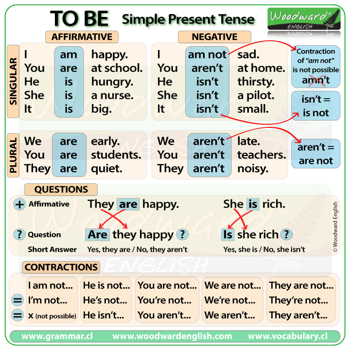

Summary

Verbs and Words - 01
Verbs and Words - 01 
| Verbs | 3° Person | Past | Translation |
|---|---|---|---|
| To jump | jumps | jumped | Pular |
| To keep | keeps | kept | Manter |
| To kiss | kisses | kissed | Beijar |
| To know | knows | knew | Saber, conhecer |
| To learn | learned /learnt | learned /learnt | sAprender |
| To lend | lent | lent | Emprestar |
| To like | liked | liked | Gostar |
| To listen | listened | listened | Ouvir |
| Words | Words | ||
|---|---|---|---|
| Baby | bebê | Floor | chão |
| Keys | chaves | Car | carro |
| Money | dinheiro | Really | realmente, sério |
| Heart | coração | Apple | maça |
| City | cidade | House | casa |
| Park | parque | Yesterday | ontem |
| Last | último(a) | Married | casado(a) |
| Tired | cansado(a) | Tall | alto(a) |
| Happy | Feliz | Brave | corajoso(a) |
| Clever | inteligente | easy-going | fácil de lidar |
| Friendly | amigável | Funny | engraçado(a) |
| Hard-working | trabalhador(a) | Honest | honesto(a) |
| Lazy | preguiçoso(a) | Moody | mal-humorado(a) |
| Polite | educado(a) | Nervous | nervoso(a) |
| Quite | quieto(a) | shy | tímido(a) |
| Creative | criativo(a) | Impulsive | impulsivo(a) |
| Big | grande | Hours | horas |
| Birthday | aniversário | Little | pouco |
| Small | pequeno | Favourite | favorito |
| Just | só | Age | idade |